Картинки для статей
Розмір 1200×675 (16:9), PNG або WebP. Підходить для мініатюри статті, Open Graph і Google Discover (ширина від 1200 px).
Картки, які сайт генерує автоматично
Генерує сайт на запит агента (POST /wp-json/uf/v1/agent/card) або під час збереження статті з uf_fixture_id. Кружечки з літерами — заглушки: у продакшені там емблеми клубів з API Sportmonks (team.image_path).
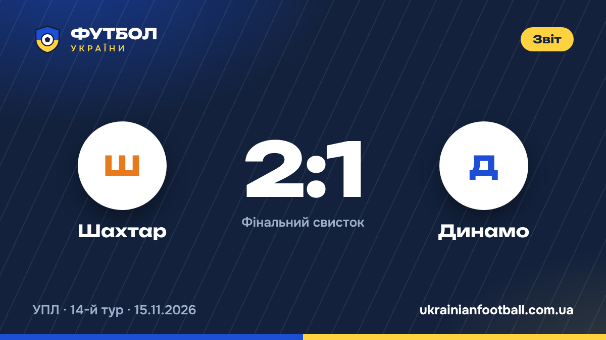
report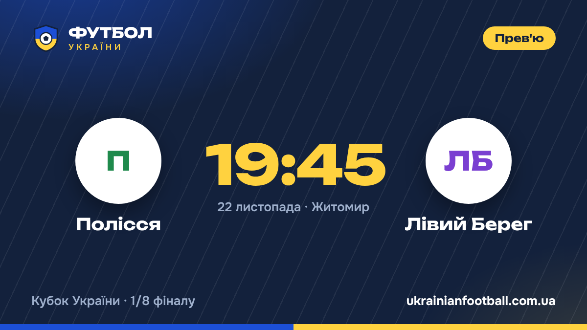
preview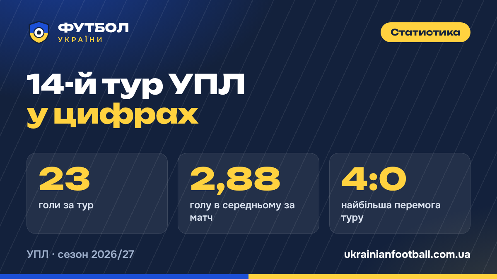
round-stats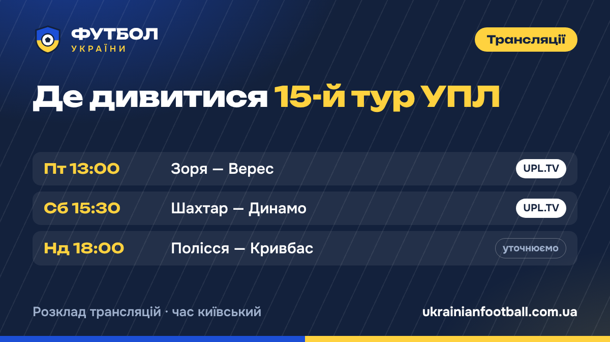
tv-roundТипові картинки рубрик
Ставляться, якщо в статті немає своєї картинки і картку згенерувати неможливо. Завантажте у Медіафайли й призначте кожній рубриці.
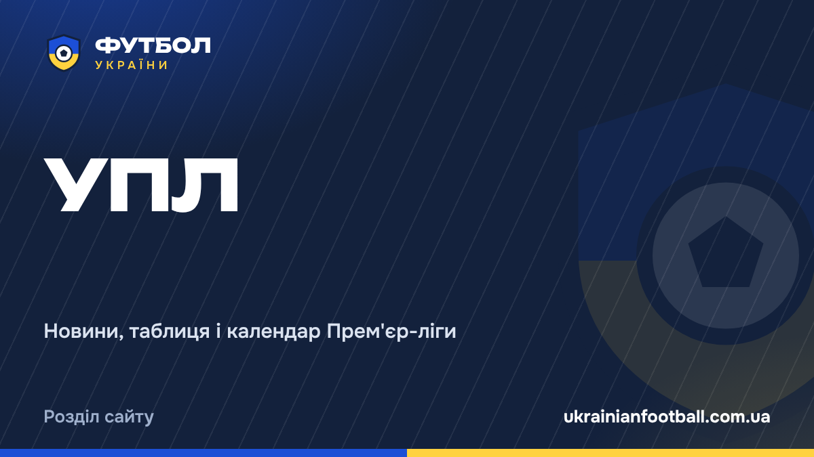

upl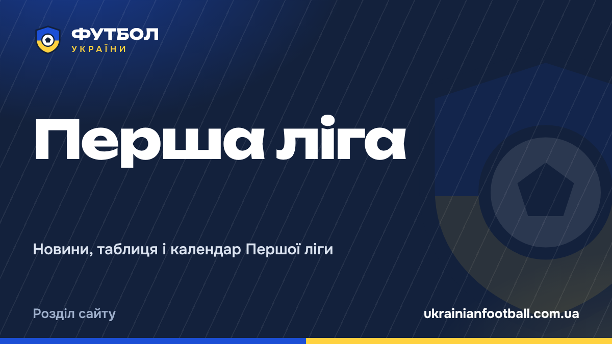

persha-liga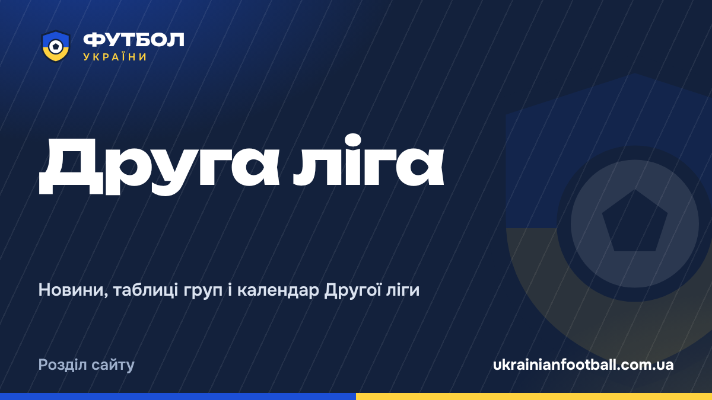

druga-liga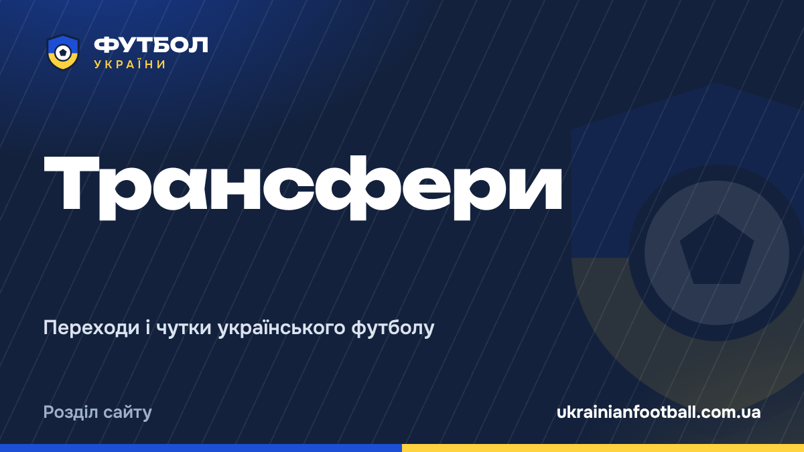

transfery-ukrayiny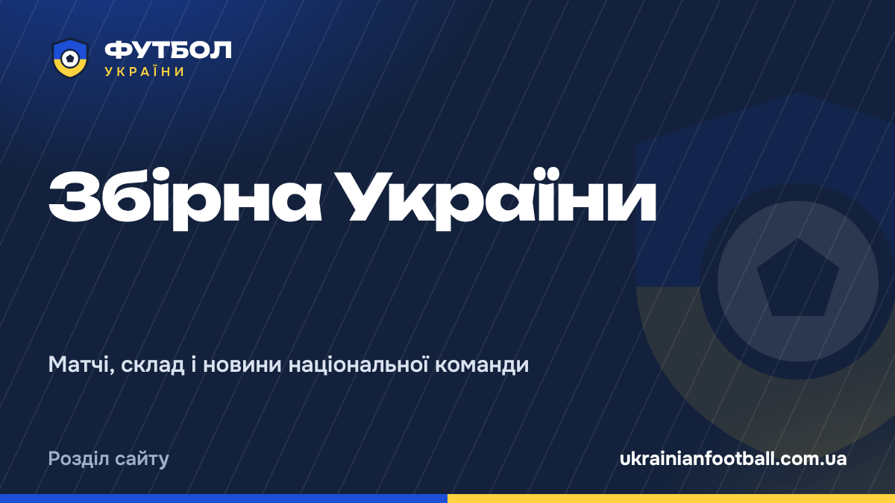

zbirna-ukrayiny
kubok-ukrayiny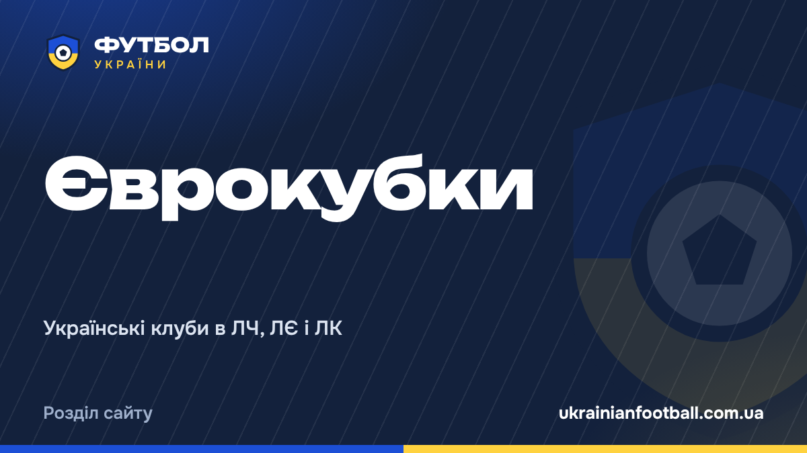

yevrokubky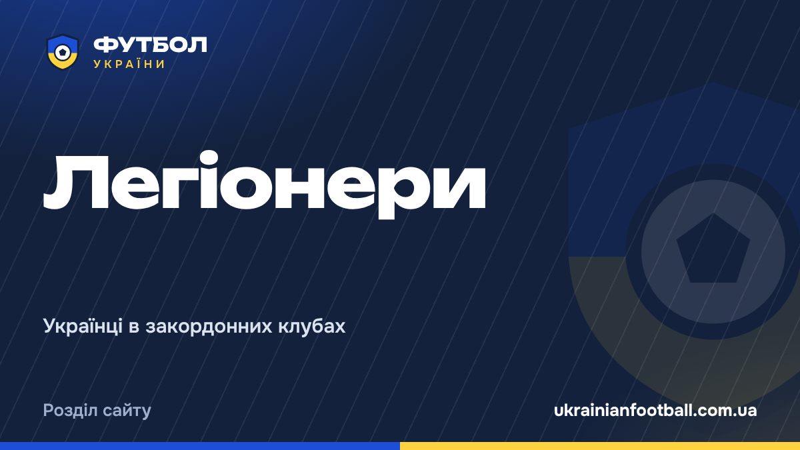

legionery
statystyka
korotko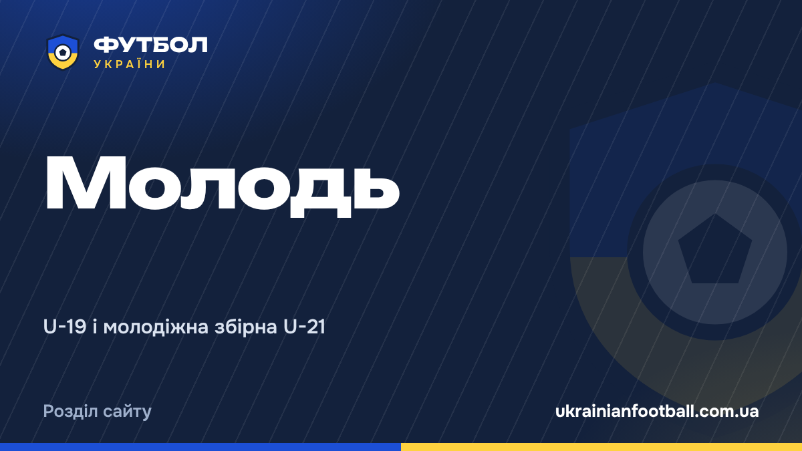

molod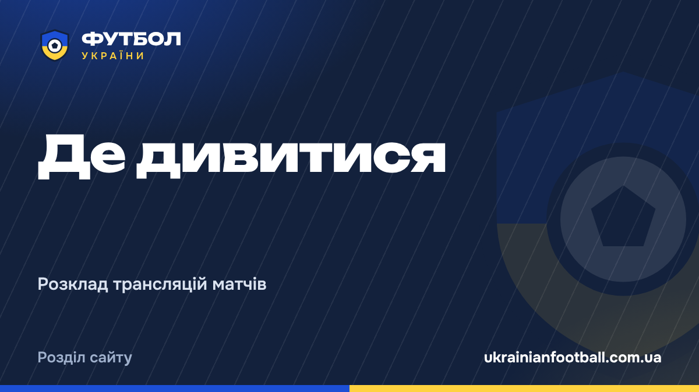

translyacziyi